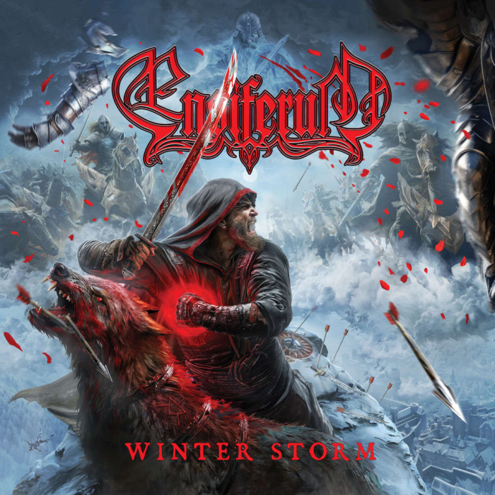

Скандинавський фолк
Скандинавський фолк-метал поєднує важкі гітарні рифи з мелодіями та міфологією Півночі. Використовуються скандинавські народні інструменти, теми вікінгів, давньої історії та природних сил. Найвідоміші гурти: Wardruna, Skálmöld, Tyr, Fejd, Månegarm, Einherjer.


🎬 Перегляд відео
🆕 Новинка

Skálmöld – Ýdalir (2023)